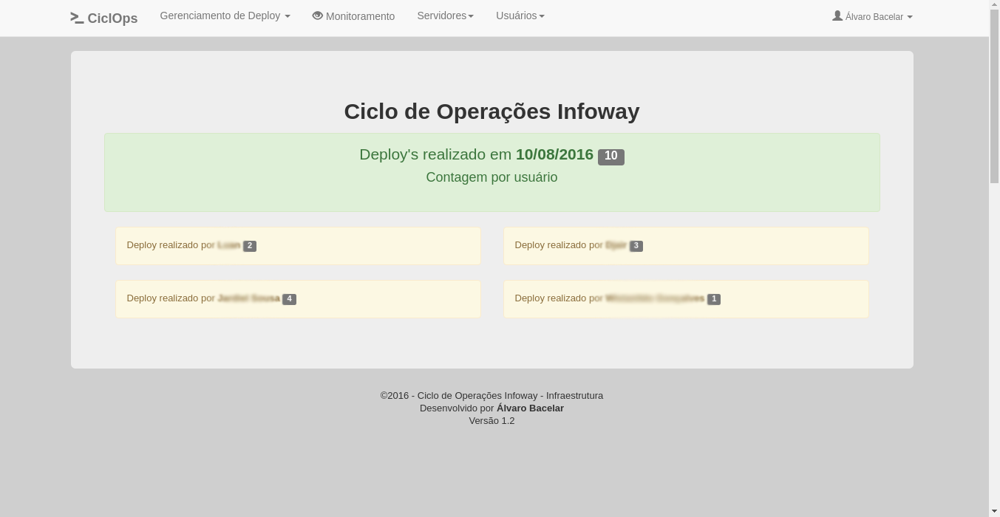

Experiências com servidores linux, gerenciamento de redes de computadores, desenvolvimento web, segurança da informação, infraestrutura ágil.
Conhecimentos técnicos
Administração de servidores Linux
Administração de Redes de Computadores
Desenvolvedor de Sistemas Web
Contato
Monitoramento de servidores
O Monitoramento de Rede Local de intranert/Internet é primordial para que possamos agir antes das interrupções de serviços, pois é possível realizar ajustes antes mesmo que aconteça o pior.
Os servidores são sistemas que fornecem os serviços de redes, como por exemplo: e-mail, arquivos, web, impressão, compartilhamento de dados. Os servidores são responsáveis por gerenciar recursos de hardware (como disco e memória), de software (como planilhas e sistemas), e compartilhar informações (como o banco de dados de uma empresa). Já os ativos são os responsáveis por trafegar os dados do servidor ao cliente como roteadores, switchs, modens, etc.
O Cadvision foi criado para melhorar a gerencia de entrada e saida de visitantes em instituições publicas e privadas. Este sistema compreende os aspectos necessários para que seja registrado um historico de visitas de cada visitante para gerar relatórios futuros.
Usado em 3 Organizações Militares, este sistema foi militarizado para se adequar as necessidades das OMs. Atualmente está sendo utilizado em Teresina-PI (2º Bec e 25ºBC) e em Picos-PI (3ºBec).
O sistema SGP, foi criado com um objetivo de gerenciar e controlar os prestadores de serviço da Operação de distribuição de carros pipa do 25ºBC.
Esse sistema abrange tanto o controle quanto a flexibilidade de gerar relatórios de Recibo de Prestação de Serviço, Declarações, Contratos e vários outros relatórios em PDF.
Com uma interface amigável, o sistema é de fácil usabilidade, assim qualquer tipo de usuário é capaz de manipular o sistema. Existe 4 tipos de usuários, cada um com permissões especificas.
Firewall com pfSense
A Internet hoje é o principal meio de comunicação. Contudo, o foco dos crackers está voltado para essa grandiosa rede de informações. Com o uso de uma ferramenta open source (pfSense) é possível proteger seus dados garantindo integridade e confidencialidade no trafego de sua rede local e também possibilidando o uso de uma VPN para acessar os dados de sua rede local remotamente.
CiclOps - Ciclo de Operações Infoway

Sistema de Cliclo de Operações, criado para automatizar a realização de deploy's, sendo possível agendar um horario especifico para que o deploy seja realizado automaticamente.
Monitoramento de ativos
Com o grafana é possivel montar dashboards para visualizar os gráficos de monitoramento com uma melhor aparencia, tornando a análise dos dados coletados pelo zabbix mais eficaz.